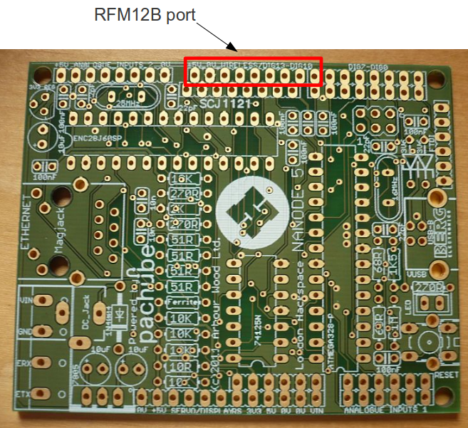

I've just soldered all my stuff together, just wondering where I can get some help about the Nanode?
In the setup I've put in some traces:
ethernet_setup(mac,ip,gateway,server,80,8); // Last two: PORT and SPI PIN: 8 for Nanode, 10 for nuelectronics
Serial.println("Ethernet set up");
rf12_initialize(MYNODE, freq,group);
Serial.println("RF12 Initialized");
But almost always I can't get the trace for 'RF12 Initialized'? I've cut the 5V pin from the RFM12B, but do I have to remove the other components as well as shown in this pic: http://wiki.hackspace.org.uk/wiki/File:JeeNode_RFM12B.jpg
As I've already soldered them on, and finding it difficult to remove them!
Is there some way to get some more debug info from the rf12_initialize command?
Regards,
Reuben
Re: Nanode + RFM12B can't initialise
Hi Reuben,
There is an error in the Nanod 5 board which stops the RFM12B and Ethernet being used at the same time. Have you followed the instructions here to mod the board?
http://wiki.hackspace.org.uk/wiki/Project:Nanode/Applications#RFM12_Wireless_Module
What sketch are you trying to run?
All the best, Glyn.
Re: Nanode + RFM12B can't initialise
Yes I followed the instructions from that post. I've removed the 10k resistor, and bent up pin 4. However I just cut the 5V header pin, I didn't remove all the components as shown in the picture, but that should be ok
(For connecting to the nanode there is no need to solder in the 3.3V voltage regulator. Just omit the 5V headder pin. The RFM12B will get is 3.3V power from the Nanode's 3.3V voltage regulator.)
I'm trying to run EtherShield_simpleClient_Pachube_RF12 from https://github.com/openenergymonitor/sketchbook/tree/master/EtherShield_...
Re: Nanode + RFM12B can't initialise
I think I know what the problem is. The RFM12 board needs to be plugged into a special port an the Nanode. This requires an extra header to be soldered in. Quite a few people have been having this problem. I will update the Nanode RFM12B section of the London hackspace wiki as soon as I get a chance. For now see image below:

Had you plugged the RFM12 board into the wrong port on the Nanode? Has this fixed the problem?
Re: Nanode + RFM12B can't initialise
Ah so this is a different port to the pins just below? I thought they were.joined but it seems not, I'll try tonight and update on success or.not
Re: Nanode + RFM12B can't initialise
Yes their different. Just updated the Nanode wiki with image showing location of RFM12B wireless port: http://wiki.hackspace.org.uk/wiki/Project:Nanode/Applications#RFM12_Wireless_Module
Re: Nanode + RFM12B can't initialise
Thanks Glyn, working now!! Also on the wiki you say an extra 9 pin header is needed? But the pin next to the 3V3 is Dig7 from this pic: http://wiki.hackspace.org.uk/wiki/File:Nanode_conns.jpg
Where is that supposed to connect to the RFM12B? Or you are just unable to use this pin with the RFM12B?
I also have a question about sending the data to Pachube. I've put in a delay of 30seconds, as I haven't got the pro account yet, but I don't get any response from Pachube when I do this, can you see if there's any error in my code? If I get rid of the lines I added, it will update a few values, but then get the error that I'm exceeding the limit.
I've only added 'lastUpdate', but the println(sent) statement works, but just doesn't seem to send the data!?!
#include <Ports.h>
#include <RF12.h>
#define MYNODE 30 //node ID 30 reserved for base station
#define freq RF12_433MHZ //frequency
#define group 212 //network group
#include <EtherShield.h>
byte mac[6] = {
0x54,0x55,0x38,0x12,0x01,0x23};
byte ip[4] = {
192,168,1,131};
byte gateway[4] = {
192,168,1,1};
byte server[4] = {
173,203,98,29};
#define PACHUBE_VHOST "www.pachube.com"
#define PACHUBEAPIKEY "www.pachube.com\r\nX-PachubeApiKey: xxxxxxxxxxxxxxx"
#define PACHUBEAPIURL "/api/xxx.csv"
char str[150];
int dataReady=0;
unsigned long lastUpdate; // only update every 5 seconds
//########################################################################################################################
// EmonTX Data Structure to be received
//########################################################################################################################
typedef struct {
int ct1; // current transformer 1
int ct2; // current transformer 2
int nPulse; // number of pulses recieved since last update
int temp1; // One-wire temperature 1
int temp2; // One-wire temperature 2
int temp3; // One-wire temperature 3
int supplyV; // emontx voltage
}
Payload;
Payload emontx;
int emontx_nodeID; //node ID of emon tx, extracted from RF datapacket. Not transmitted as part of structure
//########################################################################################################################
void setup()
{
Serial.begin(9600);
Serial.println("EtherShield_simpleClient_Pachube_RF12");
ethernet_setup(mac,ip,gateway,server,80,8); // Last two: PORT and SPI PIN: 8 for Nanode, 10 for nuelectronics
Serial.println("Ethernet set up");
rf12_initialize(MYNODE, freq,group);
Serial.println("RF12 Initialized");
lastUpdate = millis();
}
void loop()
{
//----------------------------------------
// 1) Recieve data from rf12
//----------------------------------------
if (rf12_recvDone() && rf12_crc == 0 && (rf12_hdr & RF12_HDR_CTL) == 0 && rf12_len==sizeof(Payload) )
{
emontx=*(Payload*) rf12_data;
emontx_nodeID=rf12_hdr & 0x1F; //extract node ID from received packet
Serial.print("Node ID: ");
Serial.println(emontx_nodeID);
// Construct CSV
Serial.println("CSV:");
sprintf(str,"%d",emontx.ct1);
Serial.println(str);
dataReady = 1;
}
//----------------------------------------
// 2) Send the data (wait every 30 seconds)
//----------------------------------------
if ((millis()-lastUpdate)>30000)
{
lastUpdate = millis();
if (ethernet_ready() && dataReady==1)
{
ethernet_send_post(PSTR(PACHUBEAPIURL),PSTR(PACHUBE_VHOST),PSTR(PACHUBEAPIKEY), PSTR("PUT "),str);
Serial.println("sent");
dataReady = 0;
}
}
}
Re: Nanode + RFM12B can't initialise
Fantastic.
Well spotted, your right, it's only 8 pins. Dig 7 is not used by the RFM12. I'll update the wiki. Thanks for spotting that.
I'v heard that Pachube have changed their API since we made that example. Iv not really used Pachube myself, I've been using emoncms. I know a couple of people are looking to re-write the example. In the meantime here is a link to an example of posting data to Pachube. I havent tested it myself but it was posted up by Pachube on their twitter, so I would assume it works. It used the Ethercard library from JeeLabs rather than the Ethershield library from Andy (cofusing I know!). Download it here
Let me know how you get on.
Good luck, Glyn.